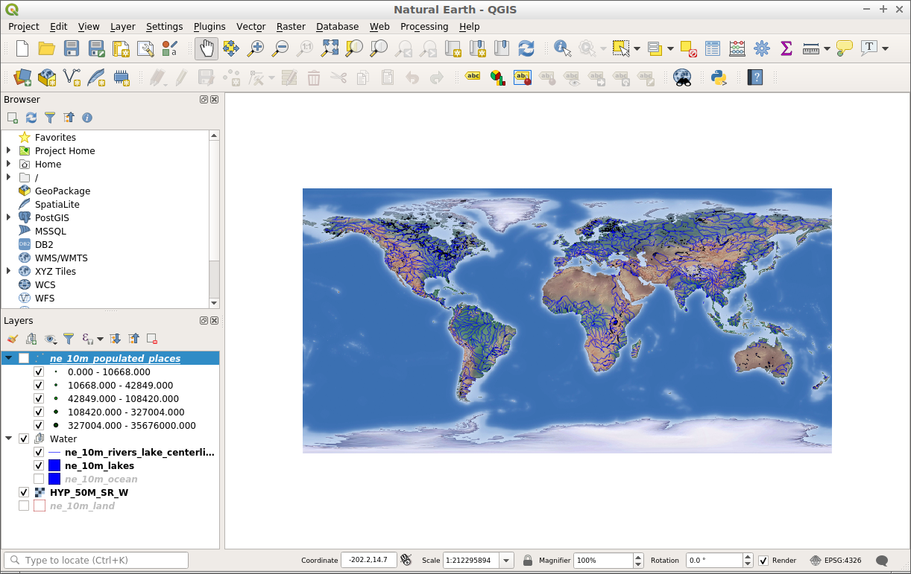
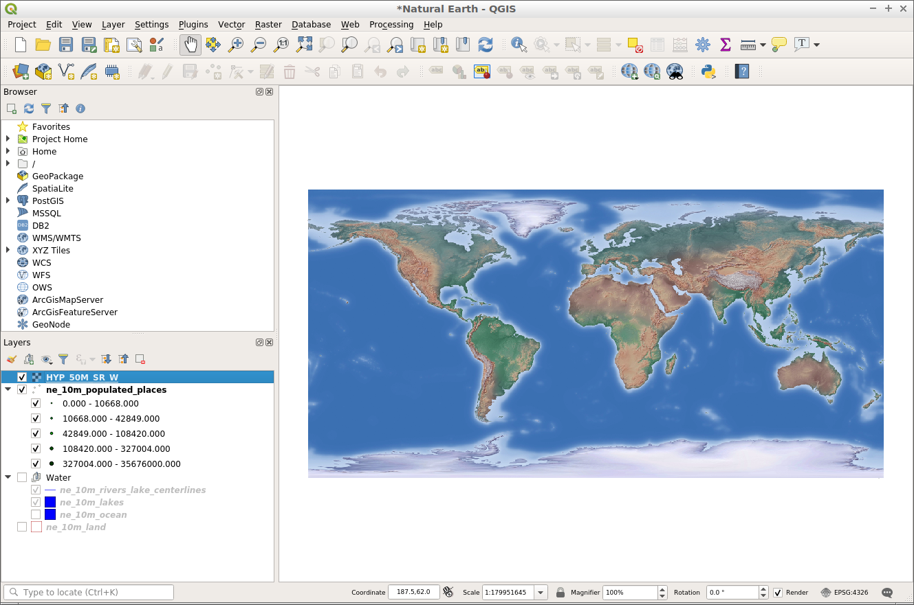
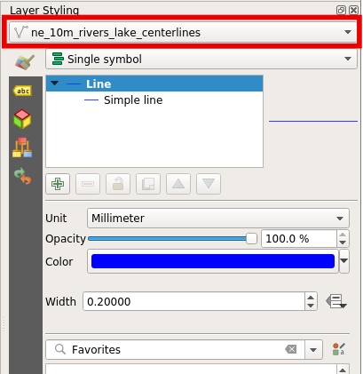
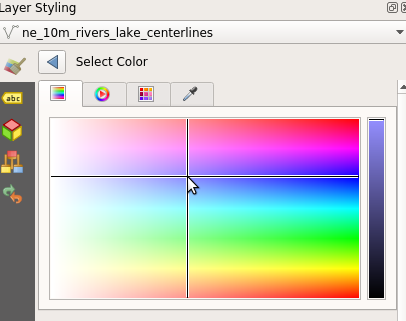

Snabbstart för QGIS¶
QGIS är en användarvänlig Desktop GIS-klient som låter dig visualisera, hantera, redigera, analysera data och skapa utskrivbara kartor.
Innehåll
Starta QGIS¶
Öppna mappen ”Desktop GIS”.
Dubbelklicka på ikonen ”QGIS”.
Du kommer att se QGIS starta med ett tomt projekt. De olika delarna av QGIS-gränssnittet listas nedan.

[1] Menyfält: Åtkomst till olika QGIS-funktioner med hjälp av en hierarkisk standardmeny.
[2] Verktygsfält: För interaktion med kartan, lager, attribut och urval.
[3] Panel för webbläsare: En spatial filbläddrare som gör det möjligt att dra och släppa innehåll i kartramen.
[4] Skiktpanel: Styr kartlagren, deras ordning och synlighet.
[5] Statusfält: Allmän information om kartan och tillgång till ett universellt sökfält.
Skapa ett projekt¶
För att skapa ett nytt projekt väljer du .

Låt oss börja med att lägga till ett vektorlager på kartan. Du kan lägga till lager i QGIS med hjälp av webbläsarpanelen till vänster på skärmen.
Gå till webbläsarpanelen till vänster på skärmen.
Navigera i mappträdet till ”home/data/natural_earth2”.
Välj ”ne_10m_admin_0_countries.shp”.
Dra lagret från webbläsarpanelen och släpp det i kartramen.

När skiktet har dragits till kartbilden visas ett skikt med länder.

Nu ska vi försöka lägga till ett rasterlager i projektet.
Gå till webbläsarpanelen till vänster på skärmen.
Navigera i mappträdet till ”home/data/natural_earth2”.
Välj ”HYP_50M_SR_W.tif”.
Dra lagret från webbläsarpanelen och släpp det i kartramen.

När skiktet har dragits till kartbilden visas ett rasterskikt som visar marktäcke och batymetri.

Nu när vi har lagt till lite innehåll i vårt projekt kan vi spara det så att vi kan komma tillbaka till det vid ett senare tillfälle.
Välj .

Välj plats för att spara projektet till ”/home/user/desktop”.
Kalla projektet för ”Mitt QGIS-projekt”.

Klicka på ”Spara”.
Du vet att projektet har sparats eftersom det kommer att finnas en projektfil på skrivbordet som heter ”Mitt QGIS-projekt” och överst i ditt projektdokument kommer det inte längre att stå ”utan titel” utan istället ”Mitt QGIS-projekt”.

Öppna ett befintligt projekt¶
Ett QGIS-projekt sparar lager, stilar, kartutsnitt och inställningar för användning vid ett senare tillfälle. Denna information lagras som en QGIS-projektfil och har filnamnstillägget ’.qgs’ eller ’.qgz’, där ’.qgz’ är standardfilformatet i QGIS framöver.
Låt oss öppna ett befintligt QGIS-projekt och titta på hur det fungerar.
Öppna QGIS. Observera att när QGIS öppnas kommer du att få en lista över de senaste projekten att välja mellan. Detta är ett smidigt sätt att öppna ett projekt som du har använt nyligen.
Välj .
Navigera till ”/home/user/qgis-example”.
Välj projektet ”QGIS-NaturalEarth-Example.qgs”.
Klicka på ”Öppna”.

Detta öppnar ett QGIS-projekt med ett antal Natural Earth-datauppsättningar, enligt nedan. Detta projekt innehåller ett antal lager i lagerpanelen och visar det spatiala innehållet i kartramen.
{kind=link}
Lager kan slås på eller av genom att klicka på kryssrutan bredvid lagrets namn i lagerpanelen. När ett lager aktiveras i lagerpanelen uppdateras kartramen så att lagret visas. En närbild av lagerpanelen visas nedan.

Nu ska vi interagera med lagerpanelen och ändra synligheten för några kartlager.
Klicka på kryssrutan bredvid lagret ”ne_10m_populated_places” för att aktivera det.
Klicka på kryssrutan bredvid ”Water”-lagret för att stänga av lagret.
Lägg märke till hur kartramen har uppdaterats för att återspegla ändringarna i skiktlistan. Vi kan nu se skiktet ”ne_10m_populated_places” som punkter, men vi kan inte längre se floderna och sjöarna som finns i skiktet ”Waters”.

Förutom att kontrollera lagrens synlighet kan vi också ändra ordningen i vilken lagren ritas i lagerpanelen. Detta görs genom att markera ett lager i lagerpanelen och dra det uppåt eller nedåt i listan. Den ordning som lagren visas i lagerlistan är den ordning som de kommer att ritas i i kartramen.
Vänsterklicka på lagret ”HYP_50M_SR_W”.
Håll musknappen nedtryckt och dra lagret till toppen av listan.
Lägg märke till att rasterlagret nu ligger ovanpå alla andra lager i lagerpanelen. Detta gör att rasterlagret nu ligger ovanpå alla andra lager i kartramen.
{kind=link}
Försök flytta skiktet ”HYP_50M_SR_W” till botten av skiktlistan. Detta skulle vara en mer lämplig position för ett kartlager som detta.
Navigera på kartan¶
Med hjälp av navigeringsverktygsfältet kan användaren flytta runt på kartan och ändra kartans omfattning.

[1] Panorera: Gör att kartan kan dras (”panoreras”) till en ny plats.
[2] Zooma in: Gör det möjligt att zooma in kartans utbredning.
[3] Zooma ut: Gör det möjligt att zooma ut kartan.
[4] Zooma till full omfattning: Ändrar kartans omfattning så att alla kartlager ryms i kartramen.
[5] Zooma till skikt: Ändrar kartans omfattning så att den passar omfattningen av det lager som markeras i lagerpanelen.
Låt oss prova att ändra kartans utbredning med hjälp av inzoomningsverktyget.
Välj verktyget ”Zooma in” i verktygsfältet för navigering.
Flytta markören över kartbilden.
Klicka och håll in vänster musknapp.
Håll musknappen intryckt och flytta markören diagonalt i valfri riktning. Observera att detta ritar en rektangel som är det område som kommer att zoomas till.
Släpp musknappen när du är nöjd med den skapade ytan.
Observera
Processen för att använda verktyget för utzoomning är densamma som för inzoomning. Resultatet blir precis tvärtom.
Låt oss nu titta på verktyget Zoom till full omfattning. Detta verktyg zoomar ut kartan så mycket att alla lager i kartan får plats. För att använda detta verktyg klickar du på knappen ”Zoom to full extent”.
Slutligen kan du prova verktyget Zoom till lager. Följ dessa steg för att använda detta verktyg:
Klicka på namnet på ett lager i lagerpanelen.
Klicka på knappen ”Zoom to layer”.
Kartan bör zooma till omfattningen av det valda (”aktiva”) lagret.
Styla dina lager¶
Skikt kan utformas i QGIS med hjälp av stildockan. Stildockan är inte synlig som standard, men är lättåtkomlig via en knapp högst upp i lagerpanelen enligt bilden nedan.

Knappen ovan fungerar som en vippknapp så att stildockan enkelt kan döljas genom att klicka på samma knapp igen. När stildockan är aktiverad visas den på höger sida av skärmen och är redo att styla det aktiva lagret som markeras i lagerpanelen.
När stildockan är öppen kan vi ändra utseendet på det lager som visas högst upp i stildockan.
{kind=link}
När stildockan nu är öppen kan vi ändra färgen och bredden på linjerna i lagret ”ne_10m_rivers_lakes_centrelines”. Låt oss prova att ändra färgen först.
Klicka på färgprovet ”Color” som visas nedan. Då öppnas en färgpalett där du kan välja en annan färg.

I paletten ”Select Color” flyttar du hårkorset till önskad färg.
Klicka sedan på pilen tillbaka för att återgå till förhandsgranskningen av symbolrenderingen.

Förhandsgranskningen av symbolen uppdateras med den nya färgen, och det gör även lagret i kartramen.

{kind=link}
I stildockan kan vi också ändra storleken på kartfunktionerna. Följ dessa steg för att ändra linjernas tjocklek:
Se till att ”ne_10m_rivers_lakes_centrelines” är markerat högst upp i stilpanelen.
I stilpanelen anger du värdet ”0,5” i inmatningen ”width”.

Lägg märke till att linjen i förhandsgranskningen av symbolen ökar i bredd, och det gör även linjerna i kartramen.
Saker att prova¶
Utöka QGIS-funktionaliteten med Plugins.
Börja manipulera data med Processing toolbox.
Använd QGIS för att visa innehåll från en PostGIS-databas.
Försök att publicera din QGIS-karta på webben med hjälp av QGIS Map Server. i
Hur vill du gå vidare?¶
För att lära dig mer om QGIS är en bra utgångspunkt Dokumentationssidan på QGIS hemsida och En mild introduktion till GIS eBook.